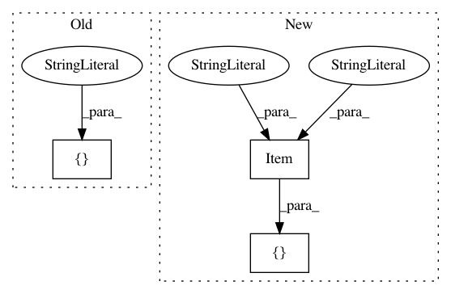

bc22d044fac59b29d4e5f83e00c4be8448a4bc43,acoular/fbeamform.py,BeamformerCMF,BeamformerCMF_1,#,1635
Before Change
// internal identifier
digest = Property(
depends_on = ["freq_data.digest", "c", "alpha", "method", "max_iter", "unit_mult", "r_diag", "steer_obj.digest"],
)
traits_view = View(
After Change
traits_view = View(
[
[Item("mpos{}", style="custom")],
[Item("grid", style="custom"), "-<>"],
[Item("method", label="Fit method")],
[Item("max_iter", label="No. of iterations")],
In pattern: SUPERPATTERN
Frequency: 4
Non-data size: 3
Instances
Project Name: acoular/acoular
Commit Name: bc22d044fac59b29d4e5f83e00c4be8448a4bc43
Time: 2018-05-03
Author: gert.herold@tu-berlin.de
File Name: acoular/fbeamform.py
Class Name: BeamformerCMF
Method Name: BeamformerCMF_1
Project Name: acoular/acoular
Commit Name: bc22d044fac59b29d4e5f83e00c4be8448a4bc43
Time: 2018-05-03
Author: gert.herold@tu-berlin.de
File Name: acoular/fbeamform.py
Class Name: BeamformerCapon
Method Name: BeamformerCapon_1
Project Name: acoular/acoular
Commit Name: bc22d044fac59b29d4e5f83e00c4be8448a4bc43
Time: 2018-05-03
Author: gert.herold@tu-berlin.de
File Name: acoular/fbeamform.py
Class Name: BeamformerFunctional
Method Name: BeamformerFunctional_1
Project Name: acoular/acoular
Commit Name: bc22d044fac59b29d4e5f83e00c4be8448a4bc43
Time: 2018-05-03
Author: gert.herold@tu-berlin.de
File Name: acoular/fbeamform.py
Class Name: BeamformerEig
Method Name: BeamformerEig_1